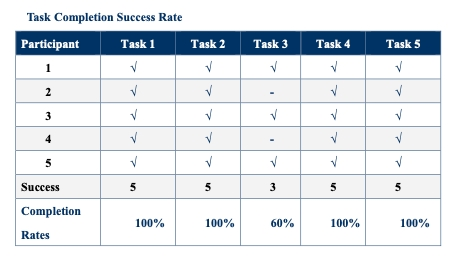
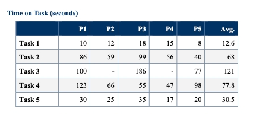
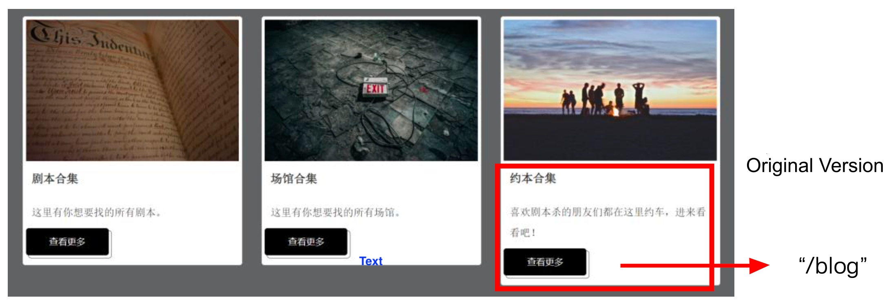
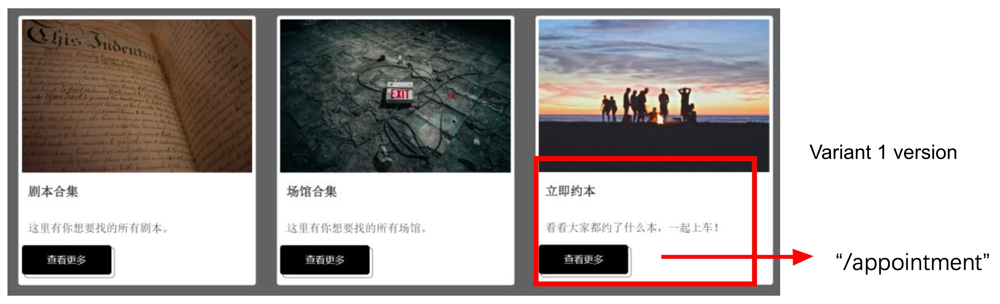
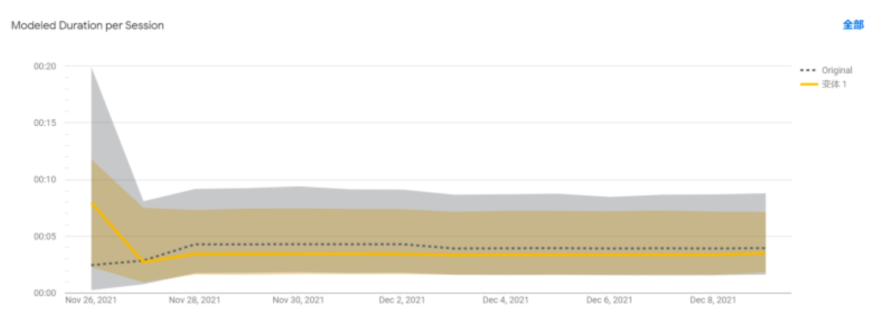

Assignment 5
The proposed solution aims to monetize the player experience by developing a community platform business model, connecting the die-hard murder/mystery game fans with the game club organizers to eliminate the time originally spent by the fans to find the scripts and locate the venues and the club owners to find players to join the game. To further narrow the scope, the geographical location that has been targeted for a pilot market entry evalution is "Wenzhou温州". Nonetheless, further validation of critical assumptions of what will engage the different parties and make them come back regularly for more by joining the paid subscription program has to be conducted as follows.
To make an appointment to play the game with other fans is the first functional requiremetnt that needs to be validated. Both usability test and AB test will be conducted to obtain feedback for the validation. The usability test can provide qualitative responses from 5 chosen users from the target persona group regarding the "why", reasons they articulated verbally in the test engagement and the AB test results can provide quantitative responses coming from a broader audience base regarding the "what" --- whether people really click the button or submit the form or not.
Five usability tasks were designed to test the ease of use in making an appointment to play the game with
other fans:
1. Where would you click to get information
2. How would you get more details and what details would you get
3. Find someone who can play the game with you and consider whether or not to realize
a “约本” activity
4. Register and log in
5. Fill in the appointment information and submit
Three post-test questions were also designed to obtain recommendations for improvement:
1. Please rate the overall process: 5 as very satisfied, 1 as very dissatisfied
2. What difficulties did you encounter in the process?
3. How do you think the page can be improved?
A/B test:
At first, to make the functions more clearly separated, the appointment function and the discussion function were designed on two different pages.
Since the appointment and forum services are the two most important parts of the platform, they were designed to be tested in the A/B test.
This A/B test is designed to see which functions are more important for script murder game players and decide which function to be the main function
of the online community. For one thing, a discussion forum allows players to communicate with each other; for another, making the appointment is the
crucial part of realizing 约本 activities.
The original version: on the homepage, there are three cards posted to direct users to different pages including scripts collection, venues collections, and the forum.
When users click the “view more” button of the forum card, they will be redirected to the forum page. For the variant 1 version, the third card on the page was redesigned.
The major function of the card was changed to be the appointment function. When users click on the "view more" button, they will be redirected to the appointment page.
The usability result can be seen as follows:

All participants successfully completed Task 1,2,4 and 5. Three of the five (60%)
completed Task 3.

As for time taken to complete tasks, task 3 required participants to find information
about other users that want to play the game and took the longest time to complete (mean = 121 seconds).
Task 4 required users to register with detailed information so it took the second-longest time to complete (mean = 77.8 seconds).
Task 2 is designed for participants to find details and it costs users more time to read and find out more (mean = 68 seconds).
Task 1 and 5 are straightforward and easy to complete for users, both of which cost little time. The average score of the process is 3.75,
with the lowest rate of 3.0 because the user thought that he could not find much information on the page. He would consider to be a member
if there are more activities posted on the forum.
Recomendations from interviewees:
For the design part:
1. The page footer widget is too big and seems to be a waste of space.
2. The buttom looks too big and is not compatible to the screen, maybe reduce its
size and make it simpler.
3. The thumbnails shown on the scripts page seem are not aligned and look brutal.
For the function part:
4. The map function page and venues details page are separeted and it is difficult for
users to directly look for location information on the map of the selected venue. It would
be better to combine the two into one page.
5. There is no need to separate the appointment page and the discussion page because
they are closely related to each other.
6. Verification of venues should be developed.
7. The registration page requires much information, maybe reduce some parts.
8. If possible, it will be better if users can go to other players’ profile and see detailed
information.
Comments from venue owners:
9. The advertising for exlusive scripts is too simple and cannot convey many messages.
It is recommendable to expand the area so that users can see more details about it.
10. More details should be provided on the venue details page, more pictures and activities
information of the venues
11. The verification of appointment system should be developed so that they won’t receive
fake appointments.
12. If possible, develop a page for venues to update time avalability of activities and
users can choose and make the appointment easily.
The A/B test result can be seen as follows:
At first, to make the functions more clearly separated, the appointment function
and the discussion function were designed on two different pages. Since the appointment and forum services are the two most
important parts of the platform, they were designed to be tested in the A/B test. This A/B test is designed to see which functions
are more important for script murder game players and decide which function to be the main function of the online community.
For one thing, a discussion forum allows players to communicate with each other; for another, making the appointment is the
crucial part of realizing 约本 activities.
The original version: on the homepage, there are three cards posted to direct users to different pages including scripts collection,
venues collections, and the forum. When users click the “view more” button of the forum card, they will be redirected to the forum page (see
original version picture).
Variant 1 version: the third card on the page was redesigned. The major function of the card was changed to be the appointment function. When users click on the “view more” button, they will be redirected to the appointment page (See variant 1 version).
From the result, it can be seen that users assigned with the original version and variable 1 version are more or less the same in the duration and pageviews per session (see A/B test comparison picture), with variable 1 performing a little bit better than the original version.
Combing the results from the usability test and A/B test, as well as recommendations put forwarded by interviewees, the appointment session has been moved to the blog page. Therefore, the two main functions are combined and shown on the same page, and users don’t have to switch from one page to another to make the appointment or communicate with others. They are now allowed to directly click the appointment button after agreeing with other stranger players with the same interest.